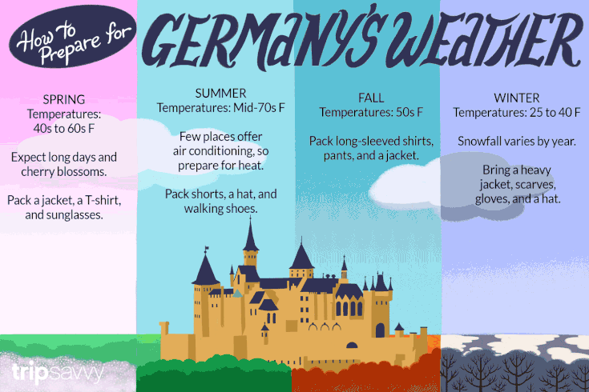

Weather
In most of Germany, the climate is moderately continental, characterized by cold winters, with average daily
temperatures around 0 °C (32 °F) or slightly above, and warm summers, with maximum temperatures around 22/24 °C
(72/75 °F) in July and August.
